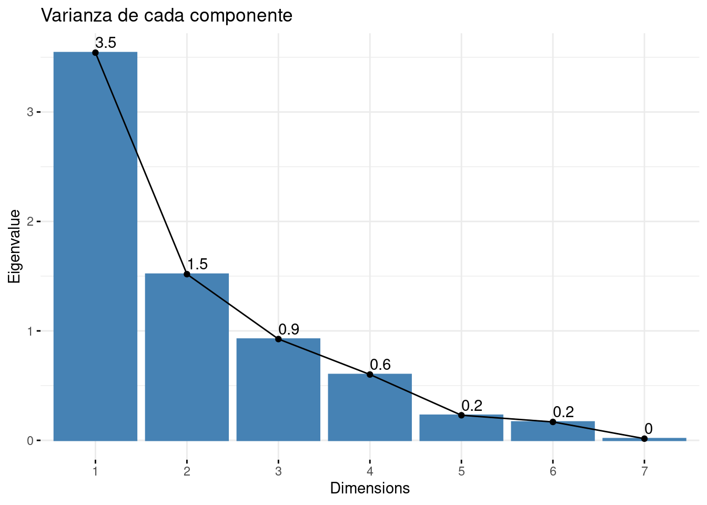
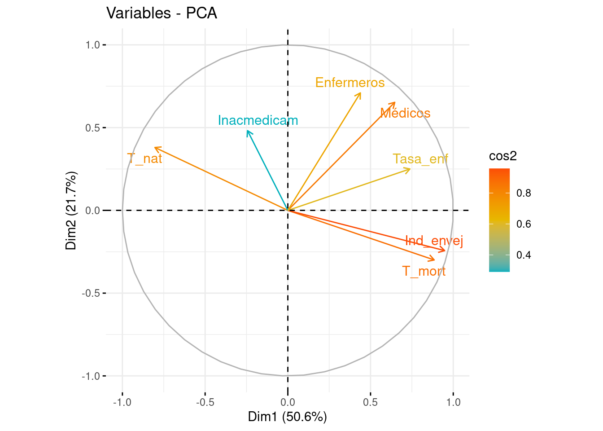
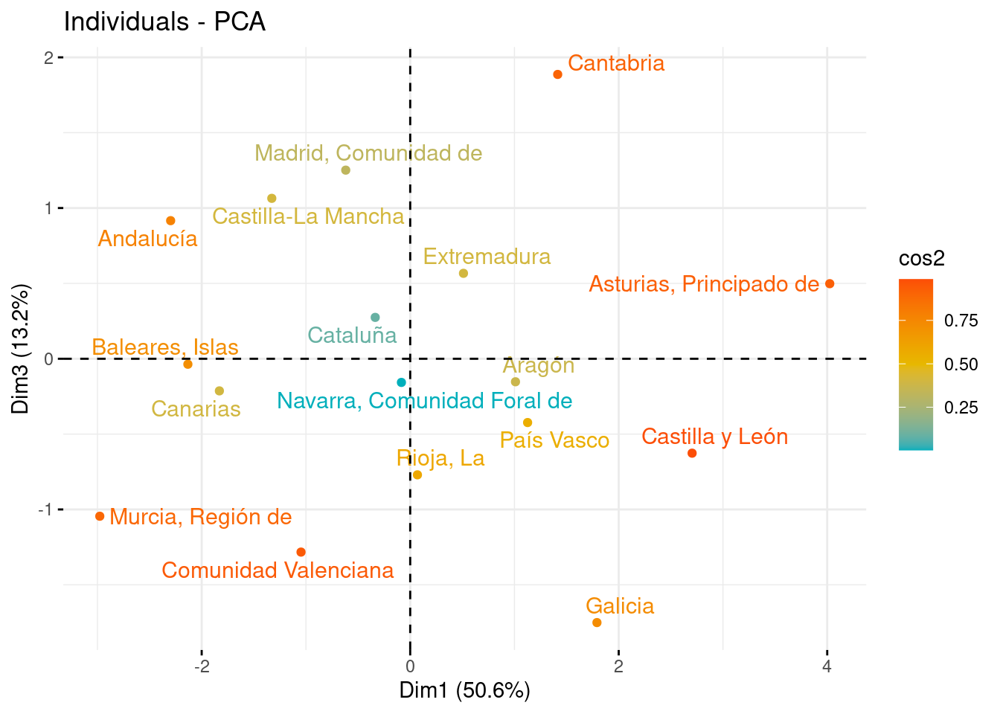
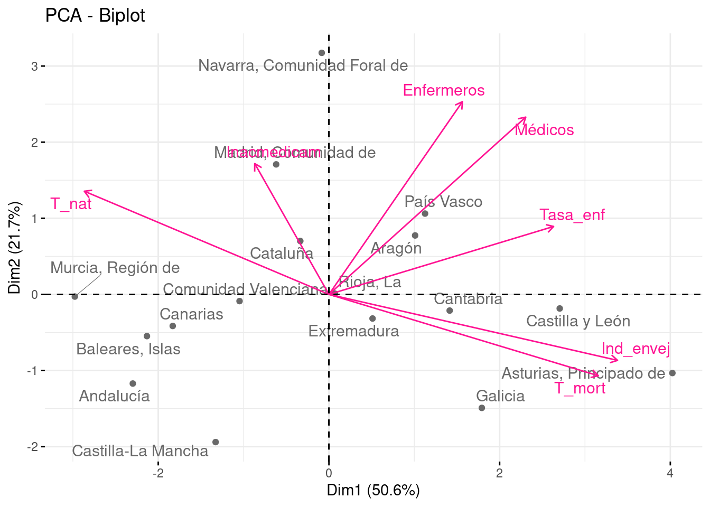

# Librerias
library(readxl) # Para leer los excels
library(dplyr) # Para tratamiento de dataframes
library(ggplot2) # Nice plots
library(factoextra) # fviz_cluster function
library(skimr) # Para funcion skim
library(ggcorrplot) # Para funcion ggcorrplot
library(corrplot) # Para corrplotReducción Dimensionalidad - PCA: Situacion_sanitaria
Introducción
dataset
En este cuaderno vamos a analizar el dataset llamado Situacion_sanitaria.xlsx. Este dataset presenta datos para las Comunidades Autónomas, abordando sobre aspectos demográficos y de salud. Contiene variables como la tasa de natalidad y mortalidad, el índice de envejecimiento, tasas de profesionales de la salud (médicos y enfermeros) por cada 100,000 habitantes, el porcentaje de inaccesibilidad a medicamentos recetados por razones económicas y la tasa media de morbilidad hospitalaria debido a enfermedades. Concretamente en este dataset tenemos las siguientes variables:
- CCAA: Comunidad Autónoma
- T_nat: Tasa de natalidad
- T_mort: Tasa de mortalidad
- Ind_envej: Índice de envejecimiento
- Médicos: Tasa de médicos por cada 100.000 habitantes
- Enfermeros: Tasa de enfermeros por cada 100.000 habitantes
- Inacmedicam: Inaccesibilidad a los medicamentos recetados por motivos económicos (%)
- Tasa_enf: Tasa de Morbilidad Hospitalaria por 100.000 habitantes debido a enfermedades, que he construido como una media (equiponderada) de las tasas de morbilidad hospitalaria debido a enfermedades endocrinas, circulatorias, digestivas, respiratorias…
Si tomamos demasiadas variables es difícil visualizar relaciones entre ellas. Otro problema que se presenta es la fuerte correlación. Se hace necesario, pues, reducir el número de variables sin perder información. Es importante resaltar el hecho de que el concepto de mayor información se relaciona con el de mayor variabilidad o varianza.
Cargamos entonces el conjunto de datos:
datos <- read_excel("../../../../files/Situacion_sanitaria.xlsx", sheet = "Datos")Descripción del trabajo a realizar
(Esto irá en la web de explica) Se pretende hacer un Análisis de Reducción de la Dimensionalidad empleando el procedimiento de Componentes Principales. El objetivo es conocer que variables independientes son de interés para estudiar la situación sanitaria y ver qué comunidades autónomas son las más parecidas y las más diferentes.
- Hacer un análisis exploratorio explorando matriz de correlaciones.
- Ver si es necesario escalar/centrar los datos antes de aplicar pca y decidir si hacerlo con matriz de correlaciones o covarianzas.
- Seleccionar un determinado número de componentes y ver como influyen las variables en estas.
- Interpretar componentes y resultados.
Análisis Exploratorio (EDA1)
En primer lugar, cargamos los datos que vamos a utilizar. En este caso, se trata de un conjunto de datos compuesto por 17 filas y 38 columnas. Las filas corresponden a las 17 Comunidades Autónomas de España.
Antes de comenzar a aplicar la técnica, comprobamos si hay valores perdidos, por si fuera necesario realizar algún preproceso. En este caso, y como vemos a continuación, no hay ningún NA en los datos que vamos a utilizar.
sum(is.na(datos))[1] 0Por otra parte, para tener una noción general que nos permita describir el conjunto con el que vamos a trabajar, podemos extraer su dimensión, el tipo de variables que contiene o qué valores toma cada una.
# Dimensión del conjunto de datos
dim(datos)[1] 17 8# Tipo de variables que contiene
str(datos)tibble [17 × 8] (S3: tbl_df/tbl/data.frame)
$ CCAA : chr [1:17] "Andalucía" "Aragón" "Asturias, Principado de" "Baleares, Islas" ...
$ T_nat : num [1:17] 8.21 7.28 5.05 8.08 6.37 6.1 5.96 7.51 8.09 7.47 ...
$ T_mort : num [1:17] 8.35 10.28 12.64 6.67 7.1 ...
$ Ind_envej : num [1:17] 101.1 143.5 218.7 99.7 114.1 ...
$ Médicos : num [1:17] 492 689 654 484 506 ...
$ Enfermeros : num [1:17] 565 682 735 545 653 ...
$ Inacmedicam: num [1:17] 0.63 1.23 0.18 0.93 1.77 0.17 1.22 0.23 0.89 1.92 ...
$ Tasa_enf : num [1:17] 545 748 834 702 538 ...# Descripción de las variables
skim(datos)| Name | datos |
| Number of rows | 17 |
| Number of columns | 8 |
| _______________________ | |
| Column type frequency: | |
| character | 1 |
| numeric | 7 |
| ________________________ | |
| Group variables | None |
Variable type: character
| skim_variable | n_missing | complete_rate | min | max | empty | n_unique | whitespace |
|---|---|---|---|---|---|---|---|
| CCAA | 0 | 1 | 6 | 27 | 0 | 17 | 0 |
Variable type: numeric
| skim_variable | n_missing | complete_rate | mean | sd | p0 | p25 | p50 | p75 | p100 | hist |
|---|---|---|---|---|---|---|---|---|---|---|
| T_nat | 0 | 1 | 7.29 | 1.14 | 5.05 | 6.37 | 7.47 | 8.09 | 9.54 | ▂▃▇▇▁ |
| T_mort | 0 | 1 | 9.39 | 1.76 | 6.67 | 8.35 | 9.55 | 10.33 | 12.64 | ▇▇▆▆▆ |
| Ind_envej | 0 | 1 | 136.60 | 37.54 | 85.98 | 114.07 | 122.57 | 150.49 | 218.65 | ▅▇▅▁▃ |
| Médicos | 0 | 1 | 574.07 | 77.11 | 446.89 | 511.41 | 554.04 | 649.27 | 689.29 | ▅▇▃▃▇ |
| Enfermeros | 0 | 1 | 688.02 | 140.73 | 458.66 | 584.09 | 681.63 | 767.79 | 1047.93 | ▅▇▇▁▁ |
| Inacmedicam | 0 | 1 | 1.12 | 0.62 | 0.17 | 0.73 | 1.22 | 1.53 | 2.24 | ▅▇▅▆▃ |
| Tasa_enf | 0 | 1 | 705.85 | 86.01 | 537.50 | 654.12 | 712.38 | 776.25 | 833.75 | ▃▅▆▅▇ |
Vemos que estas variables (a excepción de las CCAA) son todas de tipo numérico, y además, podemos obtener información como la media, desviación típica, los cuartiles y el histograma de cada una. Si no hubiesemos estandarizado las variables, las variables Médicos y Enfermeros dominarían las componentes principales puesto que toman unos valores muy grandes en valor absoluto.
Correlación: El que existan correlaciones muy elevadas en el conjunto de datos nos permitirá resumir la información en un menor número de componentes principales, pues éstas explicarán una mayor cantidad de información.
ggcorrplot(cor(datos[, 2:8]), type = "lower", lab = T, show.legend = T)En este caso, se ha generado un gráfico entre variables, sin tener en cuenta la correlación de la variable consigo misma, pues siempre será del 100%. En términos absolutos, vemos lo siguiente:
Hay varias correlaciones moderadas/altas como entre las variables T_nat y T_mort con 74% y T_nat e Ind_envej con 88%. Por otro lado con signo contrario, Medicos y Enfermeros 0.7%.
Hay varias corrlaciones medias como puede ser entre Medicos y Tasa_enf con un 59%, Indice_envej y Tasa_enf con 64% o T_mort y Tasa_enf con 58%.
Reducción Dimensionalidad: Componentes Principales
Introducción
El Análisis de Componentes Principales (PCA) es una técnica para reducir la complejidad de conjuntos de datos con múltiples variables. Su objetivo es transformar variables correlacionadas en un conjunto menor de dimensiones sin perder la mayor parte de la información original.
Se busca encontrar nuevas variables (componentes) que estén incorrelacionadas y que capturen la máxima variabilidad de los datos. Esto se logra mediante combinaciones lineales de las variables originales. PCA es útil para entender relaciones, reducir dimensiones y manejar la alta correlación entre variables.
Para aplicar PCA, se necesitan datos cuantitativos y es crucial escalar las variables (estandarizar = media cero y varianza uno). Esto garantiza que ninguna variable domine el análisis. Además, se puede trabajar con la matriz de correlaciones para abordar fuertes correlaciones entre variables, manteniendo así la información más relevante del conjunto de datos.
Los pasos generales son:
Estandarización de las variables: Es importante estandarizar las variables numéricas para que tengan media cero y desviación estándar uno. Esto es crucial para que ninguna variable domine el análisis debido a su escala.
Cálculo de la matriz de correlaciones o covarianzas: Dependiendo del enfoque, se puede trabajar con la matriz de correlaciones si se busca abordar fuertes correlaciones entre variables, o con la matriz de covarianzas si se busca la varianza total de las variables.
- NOTA: Aconsejable trabajar siempre con la matriz de correlaciones (a no ser que todas variables estén en las mismas unidades, que se podrá usar la matriz de covarianzas). De no seguir esta nota y usar la matriz de covarianzas, las variables que tienen mayores unidades dominarán la estructura de covarianza, lo que llevará a una representación inexacta de la variabilidad real de los datos.
Descomposición de la matriz: Se descompone la matriz de correlaciones en sus vectores y valores propios. Los valores propios representan la cantidad de varianza explicada por cada componente principal, mientras que los vectores propios (autovectores) determinan la dirección de cada componente en el espacio multidimensional original.
Selección de componentes: Los componentes se ordenan de manera descendente según la cantidad de varianza que explican. Los primeros componentes capturan la mayor variabilidad de los datos y se seleccionan para reducir la dimensionalidad manteniendo la información más relevante.
Transformación de datos: Proyectar los datos originales en el espacio de los componentes principales para obtener las nuevas variables. Estas son combinaciones lineales de las variables originales y son ortogonales entre sí. Esta transformación lineal conserva la mayor parte de la información en un espacio de menor dimensión, lo que facilita el análisis y la visualización de los datos.
Interpretación y visualización: Explorar la importancia de cada componente en términos de la variabilidad explicada. Se pueden interpretar los componentes para comprender qué aspectos de los datos capturan. Si es posible, representar gráficamente los datos en el espacio reducido de los componentes principales para obtener una mejor comprensión de las relaciones entre las observaciones.
Modelo
En las siguientes lineas haremos que la variable CCAA se ponga como nombre de filas y posteriormente eliminaremos esa variable ya que ya la tendremos como nombre de filas.
CCAA <- datos$CCAA
datos <- datos[, -1] # Eliminamos ahora
rownames(datos) <- CCAA # Como nombres de filas las CCAAEscalamos los datos y calculamos la matriz de varianzas covarianzas, mostramos solo la diagonal (debería ser 1).
datos2 <- scale(datos)
summary(datos2) T_nat T_mort Ind_envej Médicos
Min. :-1.9754 Min. :-1.54244 Min. :-1.3485 Min. :-1.6493
1st Qu.:-0.8131 1st Qu.:-0.58810 1st Qu.:-0.6002 1st Qu.:-0.8126
Median : 0.1554 Median : 0.09356 Median :-0.3737 Median :-0.2598
Mean : 0.0000 Mean : 0.00000 Mean : 0.0000 Mean : 0.0000
3rd Qu.: 0.7013 3rd Qu.: 0.53665 3rd Qu.: 0.3701 3rd Qu.: 0.9752
Max. : 1.9780 Max. : 1.84885 Max. : 2.1860 Max. : 1.4942
Enfermeros Inacmedicam Tasa_enf
Min. :-1.62982 Min. :-1.5146 Min. :-1.95741
1st Qu.:-0.73853 1st Qu.:-0.6173 1st Qu.:-0.60143
Median :-0.04542 Median : 0.1678 Median : 0.07583
Mean : 0.00000 Mean : 0.0000 Mean : 0.00000
3rd Qu.: 0.56682 3rd Qu.: 0.6645 3rd Qu.: 0.81849
Max. : 2.55746 Max. : 1.8020 Max. : 1.48703 diag(var(datos2)) T_nat T_mort Ind_envej Médicos Enfermeros Inacmedicam
1 1 1 1 1 1
Tasa_enf
1 Aplicamos funcion PCA, notar que en este caso no haría falta los argumentos SCALE=TRUE y CENTER=TRUE puesto que ya hemos escalado dos datos en un paso previo. Por defecto en la función viene el valor de SCALE=FALSE y CENTER=TRUE.
pca <- prcomp(datos2, center = TRUE, scale = TRUE) # Scale=TCalculamos los coeficientes de la ecuación para cada componente principal (Autovectores)
pca$rotation PC1 PC2 PC3 PC4 PC5
T_nat -0.4270118 0.3083847 -0.008988199 0.50247373 -0.348115698
T_mort 0.4701640 -0.2430823 -0.113411927 0.01113627 -0.455987748
Ind_envej 0.5036940 -0.1972515 -0.163033713 -0.10631657 0.049561195
Médicos 0.3435595 0.5298832 0.176924105 0.13246428 0.623322284
Enfermeros 0.2330590 0.5761666 0.404540649 -0.37517212 -0.510098955
Inacmedicam -0.1295046 0.3910394 -0.811238715 -0.40406462 -0.004102112
Tasa_enf 0.3921454 0.2030906 -0.327739876 0.64383523 -0.140306382
PC6 PC7
T_nat 0.40168978 0.43296643
T_mort 0.62648091 -0.32629331
Ind_envej -0.02085919 0.81646163
Médicos 0.40041787 -0.05896305
Enfermeros -0.21521711 0.05281068
Inacmedicam 0.08658092 -0.03777880
Tasa_enf -0.48123047 -0.17824227Podemos observar aquí nuestras variables en el nuevo sistema de cordenadas (las componentes principales), dando lugar a ecuaciones de cada eje como combinación lineal del total de variables. Analizar el vector que crea cada componente y cuáles son los pesos que tienen las variables en cada componente, ayuda a interpretar qué tipo de información recoge cada una de ellas.
Por ejemplo, la primera componente principal (PC1), presenta la siguiente ecuación, como combinación lineal de las siete variables originales:
$ PC_1 = -0.42 {T_nat} + 0.47 {T_mort} + 0.50Ind_envej + 0.34 Médicos + 0.23 Enfermeros -0.12 Inacmedicam + 0.39 Tasa_enf $
Extraemos las nuevas coordenadas de los individuos (puntuaciones)
Además, podemos ver las puntuaciones, que son las coordenadas de cada observación original (Comunidad Autónoma) sobre los nuevos ejes construidos (componentes principales). Esto corresponde a un cambio de coordenadas bajo el paradigma del Álgebra Lineal.
pca$x PC1 PC2 PC3 PC4
Andalucía -2.29780864 -1.17108641 0.91626309 -0.20305801
Aragón 1.00976268 0.77424874 -0.15274606 0.43908296
Asturias, Principado de 4.02433299 -1.03317546 0.49808668 0.37042340
Baleares, Islas -2.13246462 -0.54804063 -0.03645048 0.75801563
Canarias -1.83025928 -0.41486990 -0.21320240 -2.06824011
Cantabria 1.41475192 -0.21256737 1.88652836 -0.65976823
Castilla y León 2.70411492 -0.18487892 -0.62652953 -0.18199384
Castilla-La Mancha -1.32760977 -1.94021471 1.06434279 -0.04561078
Cataluña -0.33553404 0.70136546 0.27442715 1.02159787
Comunidad Valenciana -1.04717225 -0.08800225 -1.28286604 -0.35378816
Extremadura 0.51098330 -0.31670565 0.56679839 -0.05840686
Galicia 1.79132178 -1.49115973 -1.75060101 -0.19506453
Madrid, Comunidad de -0.61827496 1.70803736 1.25152616 0.76867280
Murcia, Región de -2.97739482 -0.02854523 -1.04491055 0.87136976
Navarra, Comunidad Foral de -0.08425661 3.17323869 -0.15708545 -1.05193105
País Vasco 1.12618630 1.06177566 -0.42329241 0.08245285
Rioja, La 0.06932110 0.01058035 -0.77028869 0.50624630
PC5 PC6 PC7
Andalucía -0.006424862 0.573688653 0.14890360
Aragón 0.665940100 0.695838881 -0.20598823
Asturias, Principado de 0.225286205 -0.183607951 0.07438375
Baleares, Islas 0.211985810 -0.922992167 0.03286732
Canarias 0.689522809 -0.396000896 -0.07004163
Cantabria 0.177812778 0.155155518 -0.07658536
Castilla y León -0.038962514 0.146942499 0.11730269
Castilla-La Mancha -0.632263777 0.112965899 -0.02533346
Cataluña -0.328778916 -0.570291134 -0.12593594
Comunidad Valenciana 0.100452783 -0.005465301 -0.14143116
Extremadura -0.863974957 0.020484318 -0.09478002
Galicia -0.001413730 -0.153263421 0.16331588
Madrid, Comunidad de 0.724845530 -0.162259381 0.16899413
Murcia, Región de 0.076244013 0.631672722 0.09459935
Navarra, Comunidad Foral de -0.802968126 -0.003989889 0.13676882
País Vasco 0.184217821 0.035413303 -0.06901077
Rioja, La -0.381520967 0.025708347 -0.12802897Por ejemplo, en un gráfico bidimensional con los dos primeros ejes, Andalucía toma la posición (-2.29,-1.17), o por otro lado, el País Vasco se encuentra en (1.12, 1.06). Dando una interpretación a cada eje, podremos determinar qué perfil tiene cada CC.AA. dentro del estudio.
Varianza explicada por cada componente principal
Una vez calculadas las componentes principales, es de interés conocer la varianza explicada por cada una, ya que el principal objetivo que se sigue con PCA es maximizar la cantidad de información explicada por las componentes.
summary(pca)Importance of components:
PC1 PC2 PC3 PC4 PC5 PC6 PC7
Standard deviation 1.882 1.2322 0.9619 0.77556 0.47878 0.41008 0.12381
Proportion of Variance 0.506 0.2169 0.1322 0.08593 0.03275 0.02402 0.00219
Cumulative Proportion 0.506 0.7229 0.8551 0.94104 0.97379 0.99781 1.00000Standard deviation: muestra las desviaciones estándar de cada componente principal. Si elevamos al cuadrado estas desviaciones, tenemos la varianza (el autovalor correspondiente). Es decir, la varianza explicada por cada componente corresponde con los autovalores de la matriz de covarianzas de los datos estandarizados.
Proportion of Variance: es la proporción de la varianza total que explica cada componente principal y quizá, es la fila más importante de nuestros resultados. Como los autovalores están ordenados de mayor a menor y así son construidas las componentes principales, la primera componente principal es la que mayor porcentaje de variabilidad explica, un 37%. Así, la varianza explicada por la componentes van en orden decreciente, teniendo que la segunda componente explica un 31% y la tercera, un 12%.
Cumulative proportion: es la varianza acumulada y se calcula progresivamente sumando la Proportion of Variance anterior. En vista de estos resultados, vemos que la primera componente agrupa el 37% de la variación, y que necesitamos 3 componentes para alcanzar el 80%.
Si elevamos al cuadrado estas desviaciones, tenemos la varianza (el autovalor correspondiente). Es decir, la varianza explicada por cada componente corresponde con los autovalores de la matriz de covarianzas de los datos estandarizados.
# Autovalues
pca$sdev^2 # varianza de cada componente[1] 3.54217490 1.51832920 0.92527315 0.60150104 0.22922822 0.16816380 0.01532969Selección de componentes
Graficando el valor de la varianza de cada componente principal, podemos observar los resultados comentados anteriormente, que las primeras componentes son las que más varianza explican y que a medida que se añaden más, la varianza explicada por cada una es menor.
fviz_eig(pca, main = "Varianza de cada componente", choice = "eigenvalue", addlabels = T)
o como el porcentaje de varianza explicada por cada componente sobre el total.
fviz_screeplot(pca, addlabels = TRUE, main = "Porcentaje de varianza explicada por cada componente (%)")A continuación, representamos las varianzas acumuladas:
plot(summary(pca)$importance[3, ], type = "o", col = "darkblue", lwd = 3, main = "Porcentaje de varianza acumulada", xlab = "Componente Principal", ylab = "Porcentaje de varianza acumulada")Determinar el número de componentes que elegir para continuar con el análisis no tiene unas normas determinadas a seguir. Respecto a ello, existen varios criterios con sus respectivas propuestas.
Una opción para determinar el número de componentes principales que seleccionar, es coger aquellas tal que expliquemos un % determinado de la variabilidad de los datos que nosotros prefijemos. Generalmente se pone como umbral mínimo un 80%, entonces necesitaríamos elegir 3 componentes.
Otra posibilidad es seguir el criterio de Kaisser, que escoge aquellas componentes cuyo autovalor sea superior a 1 (cuando las variables han sido generadas a partir de la matriz de correlaciones). Según este criterio y mirando el gráfico anterior de la varianza (igual a eigenvalues), eligiríamos las dos primeras componentes.
Para relajar el criterio de Kaisser, existe la modificación de Jollife, que elige aquellas componentes cuyo autovalor sea superior a 0.7. Esta modificación, nos permite elegir igualmente 3 componentes.
En este caso, nos podríamos quedar con las 3 primeras componentes principales, ya que es el número en el que coincide el mayor número de criterios. Por tanto, en lugar de trabajar con las 7 variables originales, trabajaremos con 3 variables nuevas, que son combinaciones de ellas.
Interpretación
Hemos decidido quedarnos con 3 componentes principales, que explican el 85% de la variabilidad total. Para realizar su interpretación, volvemos a ver los coeficientes de las ecuaciones de los componentes, observando cuáles son los valores más altos (en valor absoluto), para así poder dar una interpretación a cada eje.
pca$rotation[, 1:4] PC1 PC2 PC3 PC4
T_nat -0.4270118 0.3083847 -0.008988199 0.50247373
T_mort 0.4701640 -0.2430823 -0.113411927 0.01113627
Ind_envej 0.5036940 -0.1972515 -0.163033713 -0.10631657
Médicos 0.3435595 0.5298832 0.176924105 0.13246428
Enfermeros 0.2330590 0.5761666 0.404540649 -0.37517212
Inacmedicam -0.1295046 0.3910394 -0.811238715 -0.40406462
Tasa_enf 0.3921454 0.2030906 -0.327739876 0.64383523corr_var <- pca$rotation %*% diag(pca$sdev)
colnames(corr_var) <- c("PC1", "PC2", "PC3", "PC4", "PC5", "PC6", "PC7")
corrplot(corr_var)
Si nos fijamos en los pesos más altos, podemos darle una interpretación a cada eje. Por ejemplo:
La primera componente explica un 50% de la variación. Hay valores absolutos bastante similares y elevados, que son los correspondientes con las variables Ind_envej, T_mort, T_nat y Tasa_enf. Por lo tanto, parece que la primera componente recoge información demográfica. Teniendo en cuenta los signos podemos concluir que las CC.AA. que se sitúen a la derecha del eje serán aquellas con mayor Tasa de mortalidad, mayor Índice de envejecimiento, mayor Tasa de incidencia de enfermedades en la población, y en contraposición, menor Tasa de natalidad.
En la segunda componente, los pesos más elevados corresponden con las variables Médicos y Enfermeros, representando de alguna forma, los recursos sanitarios de las CCAA. Ambas variables contribuyen de forma positiva al eje, por lo que cuanto más a la derecha del eje se sitúe una CC.AA., mayores recursos de personal sanitario posee.
Para la tercera componente, el peso más elevado, corresponde a la variable medidora de la inaccesibilidad de la población a los medicamentos recetados . La variable puntúa negativamente en el eje, de forma que las Comunidades con mayor valor en esta componente, son aquellas con menor inaccesibilidad a los medicamentos.
En la cuarta componente
Representación gráfica
Gráfico de las variables
Representamos sobre las dos primeras componentes principales las variables originales. En el eje de abscisas se representa la PC1 y en el eje de ordenadas, la PC2. Para interpretar correctamente las variables tenemos que fijarnos en la longitud de la flecha y en el ángulo que forman respecto a los ejes y entre ellos mismos.
Ángulo vector - eje: cuanto más paralelo es un vector al eje, más ha contribuido a dicha componente principal.
Ángulo entre dos vectores: si es pequeño representa una alta correlación entre las variables implicadas (y por tanto, observaciones con valores altos en una variable, tendrá valores altos en la otra). Si el ángulo es cercano a 90º indica que las variables están incorreladas y los ángulos opuestos indican correlación negativa entre ellas.
Longitud: cuanto mayor es la longitud de un vector, mayor varianza de la variable está contenida en el biplot, es decir, mejor representada está en el gráfico.
En el gráfico, diferenciamos por colores las variables según su calidad de representación en las dos primeras componentes. Cuanto más cerca esté una variable del círculo de correlaciones, mejor será su representación, por lo que las variables que estén muy cerca del centro de la gráfica son las menos importantes para las dos primeras componentes.
fviz_pca_var(pca, axes = c(1, 2), col.var = "cos2", gradient.cols = c("#00AFBB", "#E7B800", "#FC4E07"), repel = TRUE)
fviz_pca_var(pca, axes = c(1, 3), col.var = "cos2", gradient.cols = c("#00AFBB", "#E7B800", "#FC4E07"), repel = TRUE)Si nos fijamos en el eje de abscisas, vemos como T_mort, Ind_envej, Tasa_enf y T_nat son las variables con menor ángulo respecto a él, indicando que han contribuído a la formación de la PC1. Las tres primeras variables se sitúan a la derecha del eje (contribución positiva), mientras que T_nat lo hace a la izquierda (contribución negativa). Es llamativo el pequeño ángulo formado por T_mort e Ind_envej, y es debido a la alta correlación entre ambas, que recordamos que era del 92%).
En cuanto al eje de ordenadas, vemos que las variables que forman un menor ángulo respecto a él, son Médicos y Enfermeros, siendo las que más contribuían a la formación de la PC2, ambas de forma positiva.
RESUMEN DE RESULTADOS
Los gráficos obtenidos muestran una visualización de las variables en función de las componentes principales 1 y 2, y 1 y 3. Las variables que tienen una correlación alta con la primera componente principal están más cerca del eje horizontal y las variables que tienen una alta correlación con la segunda componente principal están más cerca del eje vertical. Las variables que se encuentran cerca del centro del gráfico tienen una correlación baja con ambas componentes principales, aún así nos guiaremos con la tabla para decidir qué variables están mejor explicadas por cada una de las componentes. En resumen, estos gráficos proporcionan una representación visual de las relaciones entre las variables en función de las dos primeras componentes principales y las dos segundas, lo que puede ayudar a identificar patrones y tendencias en los datos.
En el siguiente gráfico podemos ver las correlaciones de dichas variables con las componentes principales, como ya hemos comentado.
corr_var <- pca$rotation %*% diag(pca$sdev)
colnames(corr_var) <- c("PC1", "PC2", "PC3", "PC4", "PC5", "PC6", "PC7")
corrplot(corr_var)En cuanto a este gráfico, es llamativo como las dos o tres primeras componentes son las más importantes en el PCA, sobre todo, la PC1.
En resumen, las nuevas componentes han permitido identificar patrones y características de las comunidades autónomas en términos de la situación sanitaria y indicadores relativos a esta.
Gráfico de los individuos
Tras observar la representación de las variables, en este apartado vemos la representación de los individuos sobre los nuevos ejes, con la idea de que aquellos con características similares, se agrupan cerca al tener puntuaciones parecidas. Las comunidades con valores cercanos a la media se situarán cerca del centro del gráfico (0,0).
Representando los individuos sobre PC1 y PC2, vemos que Comunidades como Canarias y Baleares, o Aragón y el País Vasco están muy próximas entre sí, indicando que tienden a tener un nivel sanitario similar.
# Sobre PC1 y PC2
fviz_pca_ind(pca, col.ind = "cos2", gradient.cols = c("#00AFBB", "#E7B800", "#FC4E07"), repel = TRUE, axes = c(1, 2))fviz_pca_ind(pca, col.ind = "cos2", gradient.cols = c("#00AFBB", "#E7B800", "#FC4E07"), repel = TRUE, axes = c(1, 3))
Del mismo modo, podemos representar las Comunidades sobre PC1 y PC3.
En este caso, las CC.AA. con menor porcentaje de población con inaccesibilidad a los medicamentos son Cantabria, Madrid y Castilla-La Macha, mientras que las Comunidades en las que un mayor porcentaje de población sufre estos problemas son Galicia, la Comunidad Valenciana o Murcia.
Biplot
Para poder extraer fácilmente los perfiles, podemos combinar las variables e individuos en un solo gráfico que nos permita identificar qué Comunidades se encuentran en una situación parecida y además, que nos permita identificar sus características.
El biplot permite la representación conjunta de los individuos y las variables sobre los nuevos ejes. Para que el resultado sea fácilmente interpretable, debemos tener pocas variables e individuos en el conjunto de datos.
fviz_pca_biplot(pca, repel = TRUE, col.var = "deeppink", col.ind = "#696969")
Los ejes inferior e izquierdo representan las puntuaciones o scores de cada observación sobre las componentes principales. Por ejemplo, las coordenadas de Andalucía son (-2.29, -1.17) o las de Madrid, (-0.61, 1.7).
Sobre ellos, se han superpuesto a escala, las variables tenidas en cuenta en el análisis.
Perfiles
Respecto a los extremos del eje PC1, observamos dos grupos diferenciados. Por una parte, (Murcia, Canarias Baleares y Andalucía) son las CC.AA. con mayor tasa de natalidad; mientras que (Asturias, Galicia, Castilla y León) son las que tienen una población más envejecida y con mayor tasa de morbilidad por enfermedades.
Respecto al eje PC2, se tiene que Navarra es la Comunidad con mayor personal sanitario, seguida por Madrid. Entre las Comunidades con menores recursos sanitarios se encuentran Castilla-La Mancha, Galicia y Andalucía.
También se puede destacar que La Rioja se encuentra justo en el origen de coordenadas (0,0), pudiendo considerarse representante de la media española en cuanto a las características demográficas y sanitarias.
Conclusiones
El objetivo de este estudio era, partiendo de un conjunto de datos demográfico-sanitarios sobre la población española, extraer en qué situación se encuentra cada Comunidad y así identificar cuáles son las Comunidades con un perfil más parecido entre sí.
Tras haber aplicado la técnica de PCA, hemos concluido que:
Las CC.AA. del noroeste de España como Galicia, Asturias, Castilla y León y Cantabria se caracterizan por tener su población envejecida y con mayor tasa de incidencia de enfermedades. Además, coincide con tener una baja tasa de personal sanitario.
En contraposición, Aragón o el País Vasco tienen también una población envejecida pero cuentan con una mayor tasa de personal sanitario por habitante.
Murcia, Andalucía, Baleares y Canarias se caracterizan por ser las Comunidades con mayor tasa de natalidad de España.
La situación demográfica de Madrid y Cataluña es mejor que la media española, mayor tasa de natalidad, menor mortalidad, además de que cuentan con una mayor tasa de personal sanitario.
En los extremos, Castilla La-Mancha es la Comunidad con menor personal sanitario entre su población, mientras que Navarra es la que concentra un mayor número de médicos y enfermeros entre ella.
La situación de la Rioja puede considerarse como la representantiva de la media española. También la Comunidad Valenciana y Extremadura se encuentran cercana a ella, aunque con una tasa algo menor de personal sanitario. Y mientras que la primera cuenta con una población más joven, Extremadura tiene algo más de envejecimiento en su población.
Footnotes
EDA viene del Inglés Exploratory Data Analysis y son los pasos relativos en los que se exploran las variables para tener una idea de que forma toma el dataset.↩︎